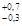
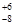
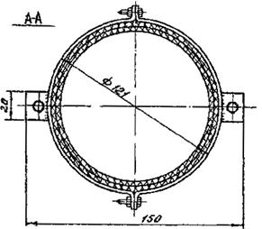
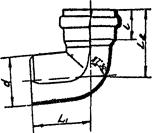
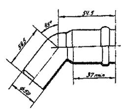
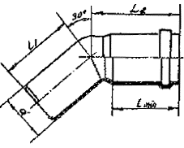

ВЕДОМСТВЕННЫЕ СТРОИТЕЛЬНЫЕ НОРМЫ
ИНСТРУКЦИЯ
ПО МОНТАЖУ СИСТЕМ
ВНУТРЕННЕЙ
КАНАЛИЗАЦИИ И ВОДОСТОКОВ
ИЗ ПОЛИВИНИЛХЛОРИДНЫХ ТРУБ
В ЖИЛЫХ И ОБЩЕСТВЕННЫХ ЗДАНИЯХ
ВСН 201-88
ОРДЕНА ЛЕНИНА
ПРОЕКТНО-СТРОИТЕЛЬНОЕ ОБЪЕДИНЕНИЕ
МОССТРОЙ
"Инструкция" разработана лабораторией инженерного оборудования НИИМосстрой (канд.техн.наук Я.Б. Алескер, инженеры Н.В. Санкова и Р.Б. Шехтер) при участии отдела санитарно-технического оборудования МНИИТЭПа (инженер С.И. Прижижецкий).
При составлении "Инструкции" использован опыт работы домостроительных комбинатов № 1, 2, 3, Хорошевского, Даниловского и Калибровского кабиностроительных заводов, трестов Моссантехстрой № 1, 2 и филиала № 1 объединения Моссантехпром.
Согласована с предприятием по изготовлению трубозаготовок (филиалом № 1 объединения Моссантехпром), монтажными организациями (Хорошевским заводом ЖБИ, ДСК-3), МНИИТЭПом и УМЭСТРом ПСО Мосстрой.
Утверждена Техническим управлением ПСО Мосстрой.
|
Мосстройкомитет ПСО Мосстрой Техническое управление |
Ведомственные строительные нормы |
ВСН 201-88 Взамен |
|
Инструкция по монтажу систем внутренней канализации и водостоков из ПВХ труб в жилых и общественных зданиях |
1.1. Настоящая "Инструкция" распространяется на монтаж внутренних систем водоотведения в жилых и общественных зданиях с использованием труб, патрубков и фасонных деталей из поливинилхлорида (ПВХ).
1.2. Системы внутренней бытовой канализации и внутренних водостоков с трубами из ПВХ монтируются в домах массового жилищного строительства высотой до 25 этажей, а также в типовых зданиях общественного назначения (детские дошкольные учреждения, школы, магазины, поликлиники и др.).
Трубы из ПВХ следует использовать преимущественно при строительстве зданий с санитарно-техническими кабинами (монтаж труб из ПВХ в сантехкабинах должен осуществляться на кабиностроительных заводах).
1.3. В системах внутренней канализации трубы из ПВХ применяются:
- для монтажа стояков и отводных трубопроводов от санитарных приборов в санитарно-технических кабинах и блоках
- при установке отдельных санитарных приборов (при монтаже "россыпью") и в санитарных узлах;
|
Внесена НИИМосстроем |
Утверждена
|
Срок
введения в действие |
- для вытяжных трубопроводов, прокладываемых в чердачных помещениях;
- для монтажа канализационных трубопроводов в подземной части зданий (в технических подпольях, подвалах).
1.4. В системах внутренних водостоков трубы из ПВХ применяются:
- для монтажа водосточных стояков;
- для прокладки отводных трубопроводов от водосточных воронок в чердачных помещениях.
1.5. Трубы ПВХ следует применять только в строящихся зданиях. Использование в одном здании труб из различных материалов, как правило, не допускается.
1.6. Если кабиностроительный завод выпускает санитарно-технические кабины с различными видами труб, то кабины с трубами из ПВХ должны иметь маркировочные знаки в виде черных букв "ПВХ" высотой 8-10 см. Знаки следует наносить несмываемой краской на наружную поверхность стены при помощи трафаретов или резиновых штампов.
1.7. В соответствии со СНиП 2.04.01 "Внутренний водопровод и канализация зданий" в многоэтажных зданиях различного назначения при применении труб из ПВХ для систем внутренней канализации и водостоков необходимо выполнять следующие условия, обеспечивающие пожарную безопасность зданий:
- прокладку канализационных и водосточных стояков необходимо предусматривать скрыто в монтажных коммуникационных шахтах, штрабах, каналах и коробах, ограждающие конструкции которых, за исключением лицевой панели, обеспечивающей доступ в шахту, короб и т.п., должны быть выполнены из несгораемых материалов;
- лицевая панель может изготавливаться в виде открывающейся двери из сгораемого материала (для труб из полиэтилена - только из трудносгораемого материала);
- в подвалах зданий, не оборудованных под производственные складские и служебные помещения, а также на чердаках и в санузлах жилых зданий прокладку канализационных и водосточных трубопроводов из ПВХ допускается предусматривать открыто;
- места прохода стояков через перекрытия должны быть заделаны цементным раствором на всю толщину перекрытия;
- участок стояка выше перекрытия на 6-10 см (до горизонтального отводного трубопровода) следует защищать цементным раствором толщиной 2-3 см;
- перед заделкой стояка раствором трубы следует обертывать удойным гидроизоляционным материалом без зазора.
1.8. Монтаж систем внутренней канализации и водостоков из поливинилхлоридных труб осуществляется в соответствии с проектной документацией.
1.9. Основные свойства труб и патрубков из ПВХ указаны в таблице 1.
Таблица 1
|
№ п/п |
Наименование |
Ед. изм. |
Показатель |
|
1. |
Внешний вид |
Поверхность изделия должна быть ровной и гладкой. Допускается незначительная шероховатость, следы от формующего инструмента, волнистость, а также отдельные включения |
|
|
2. |
Плотность |
г/см3 |
1,38-1,43 |
|
3. |
Предел текучести при растяжении |
МПа, (кгс/см2) |
44,1 (450) |
|
4. |
Относительное удлинение при разрыве |
% |
не менее 25 |
|
5. |
Температура размягчения по ВИКА |
°С |
не менее 79 |
|
6. |
Модуль упругости |
МПа |
2500-3500 |
|
7. |
Температурный коэффициент линейного расширения |
мм/м°С |
0,08 |
|
8. |
Максимальная температура: |
||
|
а) постоянно отводимых стоков |
°С |
60 |
|
|
б) кратковременных стоков |
м |
90 |
Примечание. П.п. 2, 3, 4, 6, 7 характеризуют свойства трубной продукции из ПВХ при 20°С.
1.10. Вытяжные канализационные трубопроводы из ПВХ в чердачных помещениях монтируются, как правило, в зданиях со стояками из ПВХ.
Трубопроводы из ПВХ в чердачных помещениях допускается применять при ремонте и реконструкции зданий с канализационными стояками из чугунных и полиэтиленовых труб.
1.11. Канализационные трубопроводы из ПВХ в технических подпольях монтируются только в зданиях с канализационными стояками из ПВХ.
1.12. В технических подпольях водосточные трубопроводы из ПВХ допускается применять для монтажа экспериментальных систем. Выпуск на отмостку зданий выполняется из стальных труб (при соединении стальных труб и труб из ПВХ используются фланцевые стыки).
1.13. Работы по устройству и эксплуатации систем внутренней канализации и водостоков из поливинилхлоридных труб должны выполняться техническим персоналом, обученным методам монтажа и ремонта и ознакомленным со свойствами твердого поливинилхлорида.
1.14. Рабочий персонал, осуществляющий перевозку и монтаж труб, деталей и узлов трубопроводов и санитарно-технических кабин, должен быть предупрежден о снижении сопротивляемости деталей из твердого ПВХ ударным и изгибающим нагрузкам при отрицательных температурах и о необходимости особо осторожного обращения с ними в зимнее время.
1.15. Детали и узлы трубопроводов, а также санитарно-технические кабины с трубами из ПВХ допускается перевозить при температурах до -25°С.
Монтаж трубопроводов в зимнее время следует производить при температуре не ниже -15°С.
1.16. Монтируемые детали из ПВХ не должны иметь сколов и трещин. Их следует перевозить в контейнерах, оберегая от ударов, надрезов и царапин.
1.17. Санитарно-технические кабины с трубами из ПВХ, трубозаготовки для монтажа трубопроводов в чердачных помещениях и технических подпольях, а также водосточные трубозаготовки должны храниться на приобъектном складе в зоне действия башенного крана на специально отведенных спланированных горизонтальных площадках.
1.18. На складе кабины устанавливают в рабочем положении на деревянные бруски, уложенные на плотное основание. Прокладки должны располагаться в местах, указанных в рабочих чертежах кабин. Выступающие детали канализационных труб должны находиться на расстоянии не менее 2 см от поверхности основания, на которое установлены кабины.
1.19. При транспортировании санитарно-технических кабин трубы и фасонные части из ПВХ, находящиеся в нижней части кабины, рекомендуется закрывать пленкой, рубероидом и т.п. материалами.
1.20. Погрузочно-разгрузочные работы, складирование и транспортирование кабин, а также канализационных и водосточных труб и трубозаготовок должны производиться с соблюдением мер, исключающих возможность повреждения труб из ПВХ.
2.1. Для монтажа канализационных стояков, канализационных трубопроводов в чердачных помещениях и технических подпольях зданий, а также водосточных стояков зданий высотой до 3-4 этажей и водосточных трубопроводов в чердачных помещениях (независимо от этажности) следует применять канализационные трубы, патрубки и фасонные части производства Дорогомиловского химического завода (ДХЗ) НПО "Пластик", выпускаемые по ТУ 6-19-07-86 и ТУ 6-19-308-86 (срок действия технических условий до 01.07.91).
Для монтажа водосточных стояков в зданиях, имеющих больше 3-4 этажей, и водосточных экспериментальных трубопроводов в технических подпольях необходимо использовать напорные трубы из ПВХ диаметром 110 ми по ТУ 6-19-231-83 производства ДХЗ НПО "Пластик".
2.2. Номенклатура труб, патрубков и фасонных частей производства НПО Пластик" представлена в таблице 2.
Таблица 2
|
№. п/п |
Наименование |
Диаметр, мм |
Длина, мм |
|
1 |
2 |
3 |
4 |
|
1. |
Трубы и патрубки |
50 |
345 |
|
360 |
|||
|
370 |
|||
|
410 |
|||
|
450 |
|||
|
457 |
|||
|
465 |
|||
|
515 |
|||
|
535 |
|||
|
870 |
|||
|
970 |
|||
|
2. |
-"- |
90 |
2620 |
|
5240 |
|||
|
3. |
-"- |
110 |
345 |
|
1125 |
|||
|
1215 |
|||
|
1255 |
|||
|
1315 |
|||
|
1500 |
|||
|
2000 |
|||
|
2485 |
|||
|
2605 |
|||
|
2650 |
|||
|
4000 |
|||
|
4. |
Фасонные части: |
||
|
Отвод 87°30’ |
50 |
||
|
-"- |
110 |
||
|
Отвод 45° |
50 |
||
|
Отвод 30° |
50 |
||
|
-"- |
110 |
||
|
Тройник 87°30’ |
50´50 |
||
|
-"- |
110´110 |
||
|
-"- |
110´50 |
||
|
Тройник 45° |
50´50 |
||
|
Патрубок компенсационный |
110 |
||
|
Переход |
110´50 |
||
|
Крестовина двухплоскостная правая |
110´110´50 |
||
|
Крестовина двухплоскостная левая |
110´110´50 |
||
|
Ревизия |
110 |
||
|
Крышка ревизии |
110 |
Примечания. 1. Согласно ТУ 6-19-307-86 трубы длиной 1500 мм и менее относятся к изделиям, называемым патрубками.
2. Трубы диаметром 90 мм предназначены для монтажа опытных систем внутренних водостоков.
3. По согласованию с потребителем длина труб и патрубков может уточняться и изменяться.
2.3. Номенклатура дополнительных фасонных деталей, выпуск которых намечен к освоению в НПО "Пластик", представлена в таблице 3.
Таблица 3
|
№ п/п |
Наименование фасонной детали |
Диаметр, мм |
|
1. |
Отвод 45° |
110 |
|
2. |
Отвод приборный |
110 |
|
3. |
Тройник 45° |
110´110 |
|
4. |
Крестовина 45° |
110´110´110 |
|
5. |
Крестовина 87°30’ |
110´110´110 |
|
6. |
Патрубок компенсационный |
50 |
|
7. |
Ревизия |
50 |
|
8. |
Крышка ревизии |
50 |
|
9. |
Муфта надвижная |
110 |
|
10. |
Заглушка |
50 |
|
11. |
Заглушка |
110 |
2.4. До освоения отечественной промышленностью фасонных деталей, указанных в таблице 3,следует применять фасонные детали югославского производства (СФРЮ). Закупка этих деталей производится по импорту в установленном порядке по заявкам, направляемым в Госснаб СССР.
Фасонные детали производства СФРЮ имеют меньшую толщину стенки (2,4-2,7 мм) по сравнению с деталями, изготавливаемыми в НПО "Пластик" (3,2-3,7 мм), и более низкие показатели ударной прочности, что следует учитывать при их монтаже и эксплуатации.
Номенклатура фасонных деталей югославского производства, используемых в московском строительстве, представлена в таблице 4.
Таблица 4
|
№ п/п |
Наименование фасонной детали |
Диаметрами |
|
1. |
Тройник 45° |
110´110 |
|
2. |
Крестовина 87°30’ |
110´110´110 |
|
3. |
Заглушка |
110 |
|
4. |
Отвод 45° |
110 |
2.5. Номенклатура и основные размеры фасонных деталей представлены в приложениях I (рис. 40-50) и II (рис. 51-60).
2.6. С 1989 г. НПО "Пластик" намечает выпуск опытных партий канализационных труб и патрубков из ударопрочного ПВХ. При монтаже систем водоотведения зданий предпочтение следует отдавать трубной продукции из ударопрочного ПВХ, в первую очередь при прокладке трубопроводов систем канализации в технических подпольях зданий.
2.7. Трубы, патрубки и фасонные детали как отечественного, так и югославского производства изготавливаются с раструбами под резиновые уплотнительные кольца. Кольца поставляются в комплекте с трубной продукцией из ПВХ.
2.8. Размеры раструбов с желобками труб и патрубков из ПВХ и резиновых колец к ним представлены на рис.1 и в таблице 5.
Таблица 5
Размеры в мм
|
Диаметр условного прохода |
d |
S |
S1 min |
S2 min |
d1 |
d2 |
l min |
l1 mах |
l2 min |
l3 min |
Dк |
dк |
|
50 |
50+0,2 |
3,2+0,5 |
2,9 |
2,1 |
50,3+0,8 |
59,6+1 |
7,8 |
18 |
38 |
6 |
49,0+1 |
6+0,4 |
|
90 |
90+0,3 |
3,2+0,5 |
2,9 |
2,1 |
90,4+0,8 |
101+1 |
9,1 |
20 |
48 |
6 |
89+1,2 |
7+0,4 |
|
110 |
110+0,3 |
3,2+0,5 |
2,9 |
2,1 |
110,4+0,5 |
120,6  |
9,1 |
22 |
54 |
6 |
109+1,4 |
7+0,4 |
Размеры раструбов с желобками фасонных деталей из ПВХ и резиновых колец (рис. 2) представлены в таблице 6.
Таблица 6
Размеры в мм
|
Диаметр условного прохода |
d |
S1 min |
S2 min |
d1 |
d2 |
l min |
l1 mах |
l3* |
L |
Dк |
dк |
|
50 |
50+0,2 |
3,2 |
2,4 |
50,3+0,8 |
59,6+1,0 |
7,8 |
17,6 |
6 |
30 |
49+1 |
6+0,4 |
|
110 |
110+0,3 |
3,2 |
2,4 |
110,4+0,5 |
120,6 |
9,1 |
20 |
6 |
41 |
109+1,4 |
7+0,4 |
* Для двухплоскостных крестовин размер равен 8 мм.
Рис.1. Соединение труб и патрубков из ПВХ с резиновым кольцом
Рис.2. Соединение фасонных деталей из ПВХ с резиновым кольцом
2.9. Резиновые уплотнительные кольца выпускаются заводом резинотехнических изделий (г. Тула) в соответствии с ТУ 38-105-1818-88 из резиновой смеси ТП-10.
Физико-механические показатели колец должны соответствовать нормам, указанным в таблице 7.
Таблица 7
|
№ п/п |
Наименование показателя |
Норма |
Метод испытаний |
|
1. |
Твердость по Шору А, условный единицы |
40  |
ГОСТ 18829-73 |
|
2. |
Изменение твердости после старения в воздухе при 70°С в течение 168 ч по Шору А, условные единицы, не более |
+8 |
ГОСТ 9.024-74 |
|
3. |
Относительная остаточная деформация после старения в воздушной среде при сжатии на 40% и температуре 70°С в течение 24 ч. не более, % |
25 |
ГОСТ 18829-73 |
2.10. Поверхность колец должна быть гладкая, без трещин, пузырей, включений и других дефектов, влияющих на эксплуатационные качества колец. Кольца выпускаются черного цвета, допускаются разнотонность.
2.11. На рабочей поверхности колец не допускается:
- смещения пресс-формы по месту разъёма более ±0,3 мм;
- выпрессовок высотой более 0,5 мм;
- более трех на кольцо выступов и вмятин соответственно высотой и глубиной более 1 мм, диаметром более 3 мм.
2.12. Каждое кольцо маркируется путем оттиска гравировки гнезда пресс-форт с указанием товарного знака или сокращенного наименования завода-изготовителя, номера гнезда и номера дублера, года изготовления (две последние цифры).
Примечание. До износа ранее изготовленных пресс-форм допускается другая маркировка, согласованная с НПО "Пластик" и заводом-изготовителем. В 1989 г. допускается выпуск колец без маркировки на поверхности (необходимая информация содержится в паспортных данных).
2.13. Кольца должны храниться в закрытом помещении при температуре от -25 до +35°С на расстоянии не менее одного метра от отопительных приборов. Допускается хранение при температуре но ниже -40°С в условиях, исключающих деформацию и ударные нагрузки. Следует предохранять кольца от воздействия солнечных лучей и веществ, разрушающих резину (нефтепродуктов).
2.14. Кольца после нахождения при температуре ниже -25°С перед монтажом должны быть выдержаны при положительной температуре не менее 24 часов.
2.15. В качестве монтажной смазки разрешается использовать глицерин (ГОСТ 6823-77) или раствор мыла (ОСТ 18-368-80).
2.16. Потребитель имеет право производить контрольную проверку качества колец на соответствие их требованиям ТУ 38-105-1818-88.
2.17. Количество колец (в штуках) для труб и патрубков должно превышать на 3% количество этих изделий.
Для фасонных частей общее количество колец должно на 3% превышать количество фасонных частей в партии, умноженное на количество посадочных гнезд под кольцо одного изделия.
2.18. Крышки ревизий уплотняют с помощью резиновых прокладок или круглых резиновых колец соответствующего диаметра.
2.19. Для присоединения отводных труб диаметром 40 мм от полиэтиленовых сифонов умывальников, моек, ванн и других санитарных приборов к патрубкам и фасонным частям из ПВХ диаметром 50 мм (рис. 3а, б) применяются специальные резиновые переходные детали - манжеты (рис. 4), изготавливаемые из резины марки Я-331А твердостью 35-45 условных единиц по Шору А или других аналогичных по свойствам марок резин.
2.20. Выпуски унитазов соединяют с трубами из ПВХ с помощью литьевых отводов приборных (рис. 5а) и резиновых манжет (рис. 6). Расстояние от унитаза до оси канализационного стояка регулируется с помощью вклеиваемого в отвод приборный прямого отрезка трубы (технологию склеивания см. в СН 478-80 "Инструкция по проектированию и монтажу сетей водоснабжения и канализации из пластмассовых труб", § 10).
До освоения производства отводов приборных узел соединения унитаза со стояком из ПВХ допускается выполнять с помощью отвода 30°, соединяемого с одной стороны с формованным патрубком под унитаз, а с другой - с раструбный отрезком трубы (рис. 5б). Оба соединения исполняются на резиновых кольцах.
2.21. Соединение чугунного сифона ванны с трубами из ПВХ осуществляется с помощью литьевого резьбового полиэтиленового патрубка (рис. 7) производства ПО "Моссантехпром", а полиэтиленового сифона - с помощью резиновой манжеты (см. рис. 4).
Примечание. Резьбовые полиэтиленовые патрубки для соединения с трубами из ПВХ имеют диаметр гладкого конца 50,0 мм.
Рис. 3. Варианты (а, б) узлов соединения отводных труб полиэтиленовых сифонов с трубопроводами из ПВХ:
1 - сифон; 2 - резиновая манжета; 3 - соединение с резиновым кольцом; 4 - тройник 50´50 мм; 5 - патрубок диаметром 50 мм из ПВХ; 6 - отводная труба; 7 - тройник 100´50 мм
Рис.4. Резиновая манжета для подсоединения сифона
Рис.5. Соединение выпуска унитаза с патрубками из ПВХ при помощи резиновой манжеты:
а - вариант подсоединения при помощи отвода приборного;
б - вариант подсоединения при помощи отвода 30°;
1 - выпуск унитаза; 2 - резиновая манжета; 3 - отвод приборный; 4 - вклеиваемый патрубок из ПВХ; 5 - двухплоскостная крестовина; 6 - патрубок из ПВХ с гладким раструбом; 7 - отвод 30°; 8 - патрубок из ПВХ под резиновое кольцо
Рис.6. Резиновая манжета для подсоединения унитаза
Рис.7. Узел соединения ванны с патрубком из ПВХ:
а - узел соединения: 1 - ванна; 2 - резьбовой патрубок из полиэтилена; 3 - патрубок из ПВХ; 4 - сифон чугунный; 5 - переливная труба;
б - патрубок из полиэтилена
2.22. Для подсоединения чугунного трапа, устанавливаемого в мусоросборных камерах, к трубам из ПНХ используется сборный узел (рис. 8), состоящий из стального переходного патрубка диаметром 108 им, соединяемого при помощи резиновой манжеты (см. рис. 6) с патрубком из ПВХ, имеющим гладкий раструб диаметром 114 мм.
2.23. Для перепуска воды в холодный период года от гидрозатвора системы водостоков в систему канализации из ПВХ (рис. 9) стальная перепускная труба диаметром 32 мм подсоединяется к тройнику из ПВХ 110´50 мм при помощи резиновой манжеты (рис. 4).
2.24. Варианты подсоединения трубопроводов из ПВХ, прокладываемых по подвалам и техническим подпольям, к канализационным выпускам показаны на рис.10. Если выпуск проложен из ПВХ труб диаметром 110 мм (вариант а), применяются обычные способы соединения (на резиновых кольцах).
При монтаже выпуска из чугунных труб диаметром 100 мм (вариант б) подсоединение осуществляется с использованием переходной детали из ПВХ с запрессованным в ее гладкий конец стальным патрубком с последующей заделкой его в чугунный раструб.
Если выпуск устроен из чугунных труб диаметром 150 мм (вариант в), подсоединение осуществляется аналогично варианту б.
2.25. Варианты узлов соединения водосточных стояков из ПВХ диаметром 110 мм с чугунными воронками, а также сборными стальными трубопроводами на чердаке от водосточных воронок показаны на рис. 11, а-е. Варианты а, б, в, д предусматривают применение стальных переходных патрубков, имеющих фланцевое соединение (а, б), соединение с резиновым кольцом (в) или манжетой (д) с трубами из ПВХ, и раструбное соединение под заделку - со сливными патрубками воронок. Для выполнения фланцевых соединений служит отбортованный патрубок из ПВХ с диаметром отбортовки 150 мм, соединяемый с верхней трубой стояка на резиновом уплотнительном кольце.
Рис. 8. Узел соединения чугунного эмалированного трапа с трубами из ПВХ:
1 - трап; 2 - стальная переходная деталь; 3 - манжета резиновая; 4 - патрубок из ПВХ с гладким раструбом; 5 - кольцо резиновое; 6 - труба (патрубок) из ПВХ; l - длина (определяется монтажным проектом)
Рис.9. Узел перепуска от гидрозатвора:
1 - стальная труба у 32 мм; 2 - стальная труба у 15 мм; 3 - резиновая манжета типа Б; 4 - труба (патрубок из ПВХ); 5 - тройник 67°30’ ПВХ диаметром 110´50 мм; 6 - резиновое кольцо.
Рис.10а. Узел соединения канализационного трубопровода с выпуском (вариант перехода ПВХ на чугунную трубу диаметром 150 мм):
1 - пробка; 2 - патрубок переходной чугунный (патрубок ПП-100/150); 3 - труба из ПВХ с запрессованным стальным патрубком; 4 - резиновое кольцо; 5 - ревизия; 6 - труба (патрубок) из ПВХ; 7 - заделка канатом и цементом; 8 - отвод 45° чугунный; 9 - труба (патрубок Ду 150 чугунная); 10 - тройник Ду 150 чугунный;
Рис. 10б. Узел соединения канализационного трубопровода с выпуском (вариант перехода ПВХ на чугунную трубу диаметром 100 мм):
1 - пробка; 2 - труба из ПВХ с запрессованным стальным патрубком; 3 - ревизия; 4 - труба (патрубок) на ПВХ; 5 - резиновое кольцо; 6 - заделка канатом и цементом; 7 - отвод чугунный 45°; 8 - труба (патрубок) чугунная Ду 100; 9 - тройник чугунный Ду 100
Рис. 10в. Узел соединения канализационного трубопровода с выпуском (из ПВХ):
1 - ревизия; 2 - труба (патрубок); 3 - резиновое кольцо; 4 - отвод 30°; 5 - отвод 45°; 6 - отвод 87°30’
Рис. 11. Узлы соединения стояков из ПВХ с чугунными воронками
а, б, в, г - варианты соединений; 1 - водосточная воронка; 2 - сливной патрубок воронки; 3 - заделка канатом и цементом; 4 - стальная переходная деталь; 5 - резиновая прокладка; 6 - фланцевое соединение; 7 - отбортованный патрубок из ПВХ; 8 - прочистка, 9 - соединение на резиновом кольце стальной трубы и трубы (патрубка) из ПВХ; 10 - труба (патрубок) из ПВХ; 11 - чугунный патрубок фланец-гладкий конец;
д - соединение при помощи резиновой манжеты и патрубка из ПВХ с гладким раструбом; 1 - воронка сливная; 2 - резиновая манжета; 3 - патрубок с гладким раструбом; 4 - резиновое кольцо; 5 - труба (патрубок) из ПВХ;
е - соединение при помощи резинового уплотнительного кольца и стальной переходной детали: 1 - воронка сливная; 2 - чугунный сливной патрубок воронки; 3 - заделка канатом и цементом; 4 - стальная переходная деталь; 5 - резиновое кольцо; 6 - патрубок из ПВХ с раструбом, отформованным под полиэтиленовую трубу диаметром 110 мм (по данным НИИМосстроя); 7 - труба из ПВХ
Для водосточных стояков диаметром 110 мм могут быть использованы чугунные детали фланец-гладкий конец, соединяемые на фланцах со стальным переходным патрубком и на резиновом кольце с трубой из ПВХ (вариант г).
Вариант (е) предусматривает применение раструбного стального переходного патрубка диаметром 106 мм, соединяемого с переходным патрубком из ПВХ, имеющим раструб, отформованный под диаметр 108 мм.
2.26. Варианты умов соединения стальных отводных трубопроводов, прокладываемых по подвалу для открытого выпуска ливневых вод на отмостку здания, с водосточными стояками диаметром 110 мм показаны на рис. 12.
Вариант (а) предусматривает применение отбортованных патрубков для выполнения фланцевых соединений (отбортовка выполняется на патрубке с раструбом под резиновое кольцо), а вариант (б) - использование переходного патрубка из ПВХ с запрессованным в него стальным патрубком. В варианте (в) запрессовывается патрубок из ПВХ. Запрессовываемые патрубки служат для создания более жесткого основания, которое позволяет осуществить заделку переходного элемента в раструб стального трубопровода.
Рис. 12. Варианты (а, б, в, г) узлов соединения стояка из ПВХ со стальным отводным трубопроводом:
1 - труба из ПВХ с отбортовкой; 2 - фланцевое соединение; 3 - стальной патрубок с фланцем; 4 - пролетка; 5 - стальной трубопровод выпуска; 6, 7 - труба из ПВХ с запрессованным стальным патрубком; 8 - заделка канатом и цементом; 9 - вклеенный патрубок из ПВХ; 10 - труба из ПВХ; 11 - резиновое кольцо; 12 - чугунная деталь фланец - раструб; 13 - фланцевое соединение
Для водосточных стояков диаметром 110 мм могут быть использованы чугунные детали фланец-раструб, соединяемые на фланцах со стальным трубопроводом и на резиновом кольце с трубой из ПВХ (вариант г).
2.27. Узел поворота канализационного трубопровода в техподполье допускается выполнять с использованием ревизий (рис. 13), которые могут устанавливаться между отводами 45° и 30°.
2.28. Узел перехода канализационного стояка в горизонтальный трубопровод в техподполье рекомендуется выполнять с использованием компенсационных патрубков. Изменяя глубину вдвигания вышерасположенного патрубка в удлиненный (длиной 190-200 мм) компенсационный раструб, можно обеспечить необходимый уклон горизонтального трубопровода (рис. 14).
2.29. Варианты узлов перехода стояков в горизонтальный трубопровод показаны на рис. 15. Переход от стояков к горизонтальным линиям в техподпольях может осуществляться при помощи следующих наборов отводов: 2´45°; 3´30°; 45°+30°.
Рис. 13. Узел поворота горизонтальной канализационной трассы с ревизией вместо прочистки (подвал):
1 - труба (патрубок) из ПВХ; 2 - отвод 45°; 3 -ревизия
Рис. 14. Узел перехода канализационного стояка из ПВХ на горизонтальную линию в техподполье (с компенсационным патрубком):
1 - труба (патрубок) из ПВХ; 2 - ревизия; 3 - патрубок компенсационный; 4 - отвод 45°; 5 - отвод 30°
Рис. 15. Варианты узлов перехода вертикального стояка в горизонтальную часть канализационной трассы:
1 - труба (патрубок) из ПВХ; 2 - отвод 45°; 3 - тройник 45°; 4 - отвод 30°
2.30. Узлы перехода стояков в горизонтальные трубопроводы с использованием фасонных деталей из ПВХ производства СФРЮ должны замоноличиваться строительным раствором или бетоном в опалубке.
2.31. Варианты присоединения стояков к транзитным горизонтальным трубопроводам показаны на рис. 16. Врезки вертикальных трубопроводов на горизонтальных линиях должны производиться под углом не более 45°, углы поворота должны выполняться из набора отводов 45° или 30°.
2.32. Вытяжные трубопроводы от стояков в пределах одной секции объединяются в общий трубопровод диаметром 110 мм, который выводится на 10 см выше вентиляционной шахты (рис. 17).
2.33. В канализационных трубопроводах из ПВХ труб на чердаках зданий места врезок и углы поворотов могут выполняться с использованием косых и прямых фасонных частей (тройников 45° - 110´110 и 87°30’ - 110´110 и отводов 45° - 110; 87°30’ - 110).
2.34. Монтаж стояков из ПВХ труб и трубопроводов в технических подпольях из чугунных труб производится путем соединения гладкого конца детали из ПВХ с раструбом чугунной детали с помощью круглого уплотнительного кольца внутренним диаметром 106 мм и диаметром сечения 9,0 мм с последующим заполнением раструба расширяющимся цементом (рис. 18а).
Рис. 16. Узлы присоединения на горизонталях:
1 - труба (патрубок) из ПВХ; 2 - ревизия; 3 - отвод 30°; 4 - тройник 45°
Рис. 17. Вариант узла ввода канализационного трубопровода из ПВХ в вентиляционную шахту:
1 - труба из ПВХ; 2 - отвод
На внутренней поверхности раструба чугунных деталей не должно быть углублений и раковин.
Допускается уплотнение соединений просмоленной прядью и расширяющимся цементом (рис. 18б). Для этого поверхность гладкого конца детали из ПВХ длиной 70 мм предварительно очищают растворителем, затеи наносят слой клея (например, ГИПК-127А) и после этого покрывают песком.
Заделывать соединения следует после выдержки обработанной детали из ПВХ в течение суток при положительной температуре.
2.35. Прокладка трубопроводов из ПВХ вплотную к строительным конструкциям не допускается. Расстояние между трубами из ПВХ и строительными конструкциями должно быть не менее 20 мм, между трубами из ПВХ и стальными трубами горячего водоснабжения, проложенными параллельно - не менее 100 мм, при пересечении труб расстояние может быть уменьшено до 50 мм.
2.36. Для трубопроводов из ПВХ следует применять подвижные крепления, допускающие их перемещение в осевом направлении, и неподвижные крепления, не допускающие таких перемещений.
Неподвижные крепления на трубах из ПВХ выполняются с помощью установки хомутов вблизи приклеенных и поверхности трубы упорных колец, технологических ребер жесткости на фасонных частях либо путем плотного обжатия труб или фасонных частей крепежными хомутами.
Устанавливать подвижные крепления можно без полиэтиленовой прокладки между хомутами и трубой.
2.37. Для крепления труб из ПВХ к строительным конструкциям следует применять металлические крепежные хомуты. Между скобами хомутов и трубами укладываются полиэтиленовые прокладки (толщина 1,5-2 мм, ширина 27 мм) с буртиками.
Варианты конструкций креплений для вертикальных и горизонтальных трубопроводов приведены на рис. 19 (а, б, в) и 20 (а, б).
2.38. Крепления на канализационных и водосточных трубопроводах должны устанавливаться в местах, предусмотренных проектом.
2.39. Расстановка креплений должна отвечать следующим требованиям:
- крепления должны направлять удлинения трубопроводов в сторону соединений, используемых в качестве компенсаторов;
- крепления целесообразно устанавливать у соединений с резиновыми кольцами, допускающими возможность взаимного поворота соединяемых деталей; такие крепления увеличивают жесткость смонтированного трубопровода в направлении, перпендикулярном его оси; отсутствие креплений уменьшает его жесткость;
- крепления не должны препятствовать прокладке труб с необходимым уклоном, а также должны обеспечивать вертикальность и соосность деталей трубопроводов на стояках;
- установленные непосредственно на раструбах соединений с резиновыми кольцами крепления могут уменьшить возможность соединений воспринимать температурные удлинения;
- устанавливаемые на гладком конце трубы крепления должны находиться от раструба на расстоянии, допускающем расчетные температурные удлинения трубопровода;
Рис. 18. Соединение гладкого конца детали из ПВХ с чугунным раструбом (а, б):
1 - деталь из ПВХ; 2 - чугунный раструб; 3 - резиновое кольцо; 4 - расширяющийся цемент; 5 - заделка просмоленной прядью и расширяющимся цементом
Рис. 19. Варианты конструкций крепления для вертикальных и горизонтальных трубопроводов:
а, б, в - канализационных этажестояков и отводных трубопроводов из ПВХ систем внутренней канализации; г, д - водосточных труб из ПВХ; е - полиэтиленовая прокладка для креплений
Рис. 20. Варианты (а, б) крепления для горизонтальных труб из ПВХ в чердачных и подвальных помещениях:
1 - прокладка полиэтиленовая; 2 - хомут; 3 - болт с гайкой М6´3,5; 4 - дюбель-гвоздь; 5 - стальная полоса 20´2; 6 - уголок 32´32´3; 7 - полоса 40´4
- между неподвижными креплениями допускается не более двух соединений, используемых в качестве компенсаторов;
- расстояние между неподвижными креплениями для трубопроводов диаметром 50 и 110 мм с соединениями на резиновых кольцах должно приниматься соответственно не более 1,0 и 2,0 м;
- между неподвижными креплениями допускается установка только одного компенсирующего (удлиненного) раструба;
- расстояние между подвижными креплениями для горизонтальных трубопроводов из ПВХ составляет 10 Дн, а для вертикальных трубопроводов 20 Дн (где Дн - наружный диаметр трубы);
- при установке креплений на фасонных деталях необходимо предусматривать расстояние для компенсации температурных удлинений;
Если нельзя установить крепления из фасонной части, соседние детали закрепляют хомутами на расстояниях, обеспечивающих компенсацию удлинения фасонной части.
2.40. Расстановка креплений при замене отдельных труб производится следующим образом:
- при замене участка трубы с креплением на два патрубка меньшей длины следует закреплять каждый из них;
- ри замене участка трубы без крепления на два патрубка следует закрепить только один из них;
- при использовании ремонтных двухраструбных муфт их необходимо закрепить;
- участки труб, расположенные над вставками с компенсационными раструбами, должны быть закреплены.
2.41. Крепления не устанавливаются на приборных патрубках, используемых при присоединении к сети унитазов и трапов, и на отводных трубах от пластмассовых бутылочных сифонов.
2.42. Санитарные приборы, приемники хозяйственных сточных вод, водосточные воронки и переходные металлические элементы необходимо прочно и жестко крепить к строительным конструкциям.
2.43. Металлические фасонные части, находящиеся на трубопроводе, должны иметь самостоятельное крепление, предотвращающее передачу веса на трубопровод.
2.44. Крепления трубопроводов должны иметь антикоррозионное покрытие.
2.45. При проектировании систем канализации из ПВХ труб в зданиях общественного назначения с отведением химических стоков (больницы и др.) необходимо проверять химическую стойкость труб из ПВХ к соответствующим веществам (Справочник проектировщика/под редакцией А.Н. Шестопала и В.С. Ромейко. - М.: Стройиздат, 1985).
3.1. Изготовление узлов и деталей для канализационных и водосточных трубопроводов из ПВХ осуществляемся в ПО "Моссантехпром".
3.2. Размеры выпускаемых труб и патрубков приведены в ТУ 6-19-307-66 (п.2.2).
3.3. В условиях трубозаготовительного производства могут выполняться следующие операции:
- отрезка;
- торцовка;
- снятие фаски;
- формование раструбов (гладких и с желобками);
- отбортовка концов патрубков;
- нанесение меток;
- сборка и испытание укрупненных узлов.
3.4. Сборка узлов канализационных заготовок в условиях трубозаготовительного предприятия производится с использованием раструбных соединений под резиновые уплотнительные кольца.
Перед началом сборки раструбных соединений следует очистить поверхности деталей и смазать гладкие концы соединяемых патрубков или фасонных частей глицерином или жидким мылом.
3.5. Метки на трубах и патрубках следует наносить масляной краской, грифелями и т.п. Фасонные части должны иметь метки, выполненные в процессе изготовления деталей.
Примечание. Если в процессе производства на фасонных частях метка не сделана, допускается ее нанесение краской, грифелем и т.п.
3.6. При невозможности получения из НПО "Пластик" труб и патрубков требуемых длин допускается изготавливать их на заготовительном предприятии из труб и патрубков без раструбов.
3.7. Для выполнения указанных в п. 3.3 работ следует использовать станки и устройства, разработанные НИИМосстроем совместно с СКБМосстрой и ПО "Моссантехпром".
3.8. Перерезка труб и патрубков из ПВХ производится на отрезном станке с дисковой пилой (рис. 21).
Рис. 21. Станок для отрезки труб из ПВХ диаметром 50, 90, 110 мм:
1 - дисковая пила; 2 - кронштейн; 3 - электродвигатель; 4 - балансирующее устройство; 5 - станина; 6 - зажимы; 7 - ПВХ труба
Техническая характеристика
Диаметр отрезаемых труб, мм 50,90,110
Производительность, шт/ч 200
Диаметр пилы, мм 430
Частота вращения пилы, оборот/мин. 712
Габариты, мм:
длина корпуса 900
длина корпуса с направляющими 10000
ширина 1100
высота 1560
Масса станка, кг 540
Масса станка с направляющими, кг 600
В конструкции станка предусмотрено использование дисковой пилы для перерезки патрубков при больших скоростях. При этом не надо поворачивать трубу под пилой. Станок снабжен специальными зажимами для труб и направляющими, которые монтируются на стойках с откидными болтами. Труба, которую надо разрезать, укладывается на направляющие, проталкивается до упора и зажимается при помощи пневмозажимов. Дисковая пила опускается, перерезая трубу. Затем при помощи рукоятки крана управления пила возвращается в исходное положение, труба освобождается от зажимов и снимается.
3.9. Станок, приведенный на рис. 22, предусматривает совмещение двух операций - отрезку труб из ПВХ и снятие фасок на концах. Это позволяет снизить трудоемкость процесса.
Техническая характеристика
Диаметр обрабатываемых труб, мм 50, 90, 110
Частота вращения резца, оборот/мин 203
Электродвигатель:
тип 4А80В8У3
частота вращения, оборот/мин 700
мощность, кВт 0,55
напряжение, В 380
Габариты, мм:
длина 7140
ширина 535
высота 1270
Масса, кг 156
Режущим инструментом является фасонный резец, узел крепления которого находится в защитном кожухе. Работа станка осуществляется по следующей технологической схеме: труба, помещенная на специальных ложементах, надвигается на обойму до ограничителя, фиксирующего необходимую длину отрезки. Затем труба при помощи цангового устройства зажимается в обойме. При включении электропривода начинается вращение обоймы с закрепленным в ней резцом. Рукояткой толкателя приводится в движение каретка, подводя обойму с резцом к трубе, и производятся одновременно две операции: перерезка и снятие фаски. Для обработки патрубков диаметром 50 и 90 мм в обойме устанавливаются сменные вкладыши.
3.10. В условиях заготовительного производства допускается производить формование гладких раструбов и раструбов диаметром 50, 90 и 110 мм под резиновое уплотнительное кольцо.
Рис. 22. Станок для резки и снятия фасок на концах патрубков из ПВХ диаметром 50, 90, 110 мм:
1 - обойма; 2 - рукоятка; 3 - стопор; 4 - резец; 5 - каретка; 6 - толкатель
Рис. 23. Станок для формования раструбов с желобками на патрубках из ПНХ:
1 - блок подготовки воздуха; 2 - кожух; 3 - пневмоцилиндр формования; 4 - механизм формования; 8 - корпус
3.11. Перед формованием раструбов концы патрубков должны быть разогреты в ванне с глицерином или в специальном нагревательном устройстве, предусматривающем контактный способ нагрева до температуры формования 120-130°С.
3.12. Работы по формованию раструбов на трубах в условиях заготовительного производства не носят массового характера. Для формования раструбов с желобами следует использовать станки (рис. 23) с формующими оправками (рис. 24).
Основным узлом оправок для формования является подвижный конус, в пазах которого находятся специальные клинья с выступами для формования желобка.
3.13. Для формования гладкого раструба на патрубке, входящем в узел соединения унитаза со стояком из ПНХ (см. рис. 5б), можно использовать станок, представленный на рис. 25 или трехпозиционную установку конструкции филиала № 1 ПО "Моссантехпром" (рис. 26).
Станки для формования гладких раструбов снабжены дорнами, которые вдвигаются в нагретые размягченные концы патрубков, и устройствами для снятия охлажденных патрубков с дорнов.
3.14. Торцовка концов патрубков производится на станке с резцовыми головками для обработки труб и патрубков из ПВХ диаметром 50, 90 и 110 мм.
3.15. Отбортовку патрубков (рис. 27) необходимо формовать вдвигаемым внутрь разогретого патрубка пуансоном и прижимным фланцем, оформляющим наружную поверхность отбортовки (рис. 28).
3.16. Размеры всех формующих инструментов следует назначать с учетом усадки отформированного изделия после охлаждения.
Рис. 24. Оправка для формования раструбов с желобками на патрубках из ПВХ
Рис.25. Станок для формования гладких раструбов на патрубках из ПВХ:
1 - пневмоцилиндр; 2 - направляющая; 3 - дорн; 4 - камера охлаждения; 5 - зажимное устройство
Рис.26. Станок для формования гладких раструбов на патрубках из ПВХ (конструкция ПО "Моссантехпром"):
1 - отформованный раструб; 2 - трубопровод подачи воды для охлаждения; 3 - установочная плита; 4 - дорн, 5 - основание; 6 - шланг; 7 - трехходовой кран; 6 - пневмоцилиндр; 9 - запорный вентиль; 10 - ванна для охлаждения готовых изделий
Размеры отбортованных патрубков
|
Дн |
Дф |
R |
Минимальная длина |
Масса в кг |
|
|
Патрубка L |
заготовки |
||||
|
90 |
130 |
11 |
170 |
190 |
0,223 |
|
10 |
150 |
13 |
170 |
190 |
0,669 |
Рис.27. Отбортованный патрубок из ПВХ
Рис.28. Станок для отбортовки патрубков из ПВХ:
1 - зажим; 2 - механизм отбортовки; 3 - основание; 4 - пневмоцилиндр
3.17. Рабочие поверхности всех формовочных инструментов должны быть отполированы.
3.18. Поверхность готового изделия должна быть ровной и гладкой. Допускаются незначительные следы от формующего инструмента. На поверхности и по торцу трещины и раковины не допускаются. Диаметр и толщина стенок отформованных изделий должны соответствовать требованиям ТУ 6-19-307-86 и ТУ 6-19-308-86.
3.19. Механизированная сборка узла для присоединения унитаза (формованный патрубок с гладким раструбом, отвод 30° - 110 мм и раструбный отрезок трубы) производится на специальном монтажном стенде (рис. 29) конструкции ПО "Моссантехпром".
3.20. Сборка укрупненных узлов должна производиться в последовательности, указанной в п. 4.5.
3.21. Отклонения габаритов собранных узлов трубопроводов от заданных не должны превышать ±5 мм.
3.22. Собранные на заготовительном предприятии узлы и заготовки должны быть герметичны при испытании гидравлическим давлением 100 кПа (1 кгс/см2) при температуре 20±2°С в течение 15 минут.
4.1. Монтаж канализационных и водосточных трубопроводов из ПВХ может осуществляться как из готовых узлов, собранных и испытанных в ПО "Моссантехпром", так и из отдельных труб, патрубков и фасонных деталей - "россыпью".
4.2. При выполнении монтажных работ подлежат выбраковке:
а) все детали из поливинилхлорида, имеющие трещины или сколы;
б) резиновые кольца, имеющие разрывы, неудаленную выпрессовку, а также не входящие при легком нажатии в желобок раструба.
Рис. 29. Установка для сборки узлов, используемых для присоединения унитазов к канализационным стоякам из ПВХ (конструкция ПО "Моссантехпром"):
1 - пневмоцилиндр; 2 - толкатель; 3 - опора; 4 - зажим; 5 - шланг; 6 - трехходовой кран; 7 - направляющая.
4.3. Монтажные схемы канализационных и водосточных стояков представлены на рис. 30 и 31. На рис. 30 показаны варианты канализационных этажестояков с подсоединенными к ним кухонными мойками (а и б) и без моек (в и г). В том и в другом случае этажестояки могут выполняться с ревизиями (а, в) и без ревизий (б, г). На рис. 31 показаны варианты водосточных стояков с трубопроводом от нескольких водосточных воронок (а) и с непосредственным соединением стояка с воронкой (б). На всех схемах указаны места установки креплений.
4.4. Сборка соединений с резиновыми кольцами труб и фасонных частей из ПВХ диаметром 50 и 110 мм должна производиться введением гладкого конца трубы в раструб до метки на длину соответственно 36 и 47 мм. Введение гладкого конца детали до метки обеспечивает в раструбе зазор между торцом детали и упорной поверхностью раструба, используемый для компенсации температурных удлинений трубопровода.
4.5. При соединение раструба с резиновым уплотнительным кольцом необходимо выполнить следующие операции:
а) очистить от загрязнений наружную поверхность детали и внутреннюю поверхность раструба, особенно желобок;
б) очистить резиновое уплотнительное кольцо, в случае необходимости снять выпрессовку (избыточное количество резины, не удаленной с колец после вулканизации);
в) вложить резиновое кольцо в желобок раструба;
г) смазать гладкий конец патрубка с фаской глицерином (вместо глицерина может быть использован мыльный раствор);
д) вручную произвести сборку узлов, при этом легким вращением гладкий конец патрубка ввести в раструб до метки либо раструб надвинуть на конец патрубка.
Примечание. Смазка концов деталей маслами, солидолом или другими аналогичными смазочными материалами запрещается;
е) проверить качество сборки, поворачивая одну из соединяемых деталей вокруг другой. Если кольцо не выдавлено, деталь легко проворачивается.
Рис. 30. Монтажные схемы (а, б, в, г) канализационных стояков:
1 - соединение со стояком вышестоящей кабины; 2, 3, 5 - соединение до метки; 4 - неподвижное крепление
Рис. 31. Монтажные схемы водосточного стояка с трубами из ПВХ:
а - здание с чердаком; б - бесчердачная кровля;
1 - водосточная воронка; 2 - сборный трубопровод; 3 - узел соединения стального переходного патрубка с трубой из ПВХ; 4 - крепление; 5 - узел соединения стояка из ПВХ со стальным трубопроводом выпуска; 6 - выпуск; 7 - прочистка; 8 - проход трубы через междуэтажное перекрытия; 9 - стальной переходной патрубок
4.6. Соединения с резиновыми кольцами в системе канализации, в которых не предусмотрена компенсация температурных удлинений, могут выполняться путем сдвигания гладкого конца патрубка в раструб до упора.
4.7. Санитарно-технические кабины с трубами из ПВХ должны устанавливаться на междуэтажные перекрытия, а канализационные стояки соединяться между собой со строгим соблюдением соосности. Несоосное соединение стояков не обеспечивает условий для температурных удлинений смонтированных трубопроводов (рис. 32).
4.8. Канализационные стояки, смонтированные в санитарно-технических кабинах, следует соединять при помощи междуэтажной вставки, вводимой в раструб компенсационного патрубка на длину не менее 47 мм.
Соединять междуэтажные вставки с вышерасположенными деталями следует с помощью резиновых колец.
4.9. Монтаж канализационных стояков в санитарно-технических кабинах в построечных условиях заключается в следующем (рис. 33): междуэтажную вставку, состоящую из патрубков 2 и 4, выдвигают из компенсационного патрубка 5 и соединяют с двухплоскостной крестовиной 1 вышележащей кабины. При этом необходимо выполнить следующие операции:
- проверить наличие резинового уплотнительного кольца в желобке раструба патрубка 2;
- нанести на гладкий конец двухплоскостной крестовины вышележащей кабины смазку (глицерин, мыльный раствор и т.п.);
- ослабить крепления 6 и 7;
- установить монтажное приспособление (рис. 34) для труб диаметром 110 мм на патрубке 4; с небольшим вращением надвинуть междуэтажную вставку 3 на гладкий конец двухплоскостной крестовины 1;
- затянуть крепление 7 и с помощью монтажного приспособления опустить патрубок 4 в компенсационный раструб 5 таким образом, чтобы монтажная мотка, имеющаяся на гладком конце патрубка 2, совпала с торцом раструба патрубка 4;
- затянуть крепление 6, а крепление 7 ослабить.
Примечание. Поэтажная сборка канализационных стояков с ревизиями производится аналогичным образом.
Рис.32. Соединение канализационных деталей или водосточных стояков:
а - правильное; б - неправильное;
1 - гладкий конец детали; 2 - раструб; 3 - резиновое уплотнительное кольцо
Рис. 33. Схема поэтажной сборки канализационного стояка из труб ПВХ:
1 - двухплоскостная крестовина; 2, 4 - патрубки; 3 - междуэтажная вставка; 5 - компенсационный патрубок; 6, 7 - кропления (два полухомута, скрепленные болтами)
4.10. Монтаж водосточных стояков из ПВХ следует производить по схеме "снизу вверх".
4.11. При монтаже водосточных стояков все соединения труб на резиновых кольцах должны обеспечивать компенсацию температурных удлинений.
4.12. Соединение переходных деталей с чугунным сливным патрубком водосточной воронки в чердачных помещениях или на верхних этажах и стальным отводным трубопроводом в техподполье производится путем законопачивания белым и смоляным канатами и зачеканки расширяющимся цементом.
Рис. 34. Приспособление для монтажа труб из ПВХ:
1 - ушко; 2 - рукоятка; 3 - прокладка; 4 - бобышка; 5 - вилка; 6 - болт; 7 - сегмент
4.13. Конопатки и чеканки при выполнении узлов соединения металлических труб с пластмассовыми должны иметь гладкую поверхность и округленные кромки. В процессе работы не должны наноситься удары по пластмассовым деталям.
4.14. На строительной площадке в необходимых случаях допускается механическая обработка труб и патрубков (резка и снятие фаски). Резка и укорачивание фасонных частей запрещается.
4.15. Для резки труб и патрубков в условиях монтажа применяют ручные ножовки для металла с обычными полотнами, столярные ножовки, а также мелкозубые плотницкие пилы. Предпочтительнее использовать ручные плиты со следующими характеристиками: высота зубьев - 2,5¸3,0 мм, шаг зубьев - -2¸3 мм, развод зубьев 0,5¸0,7 мм, толщина полотна -0,8¸1,0 мм.
4.16. Разрезать трубы и патрубки необходимо строго перпендикулярно их оси. При резке вручную рекомендуется применять шаблон, изготовленный из сухих досок или многослойной фанеры. Образующиеся при резке заусенцы и стружка снимаются шабером.
4.17. С наружной стороны трубы для соединения с резиновыми кольцами напильниками с крупными насечками снимается фаска под углом 15°. Предпочтительнее использовать плоские и плоские остроносые напильники с длиной рабочей части 250-315мм, максимальной толщиной 7-8 мм, с номерами насечек 1 и 2.
4.18. Для монтажа трубопроводов из ПВХ можно использовать приспособления, входящие в комплект инструментов (рис. 35).разработанный НИИМосстроем и СКБ Мосстрой.
4.19. Установка заглушек в технических подпольях требует дополнительного закрепления их на раструбах фасонных деталей или патрубков специальными фиксаторами (рис. 36).
Рис.35. Комплект монтажных инструментов:
1, 2, 3, 4 - инструменты для сборки раструбных соединений с резиновыми уплотнительными кольцами; 5 - торцевой ключ для монтажа выпусков санитарных приборов; 6, 7, 8 - ключи для монтажа полиэтиленовых сифонов
4.20. Для монтажа и демонтажа крышек ревизий рекомендуется использовать приспособление, показанное на рис.37.
4.21. Подъем контейнеров (пакетов, пачек) с трубозаготовками на крышу или перекрытие верхнего этажа производится башенным краном. Трубозаготовки хранятся упакованными вплоть до начала монтажа.
4.22. При монтаже групповых умывальников, моек, писсуаров и других санитарных приборов объединенные отводные трубопроводы необходимо закрывать съемными коробами или замоноличивать после проведения гидравлических испытаний систем.
4.23. Прямые и косые крестовины, с помощью которых происходит присоединение санитарных приборов или отводных трубопроводов, должны иметь самостоятельные крепления к строительным конструкциям.
4.24. В техподпольях в местах пересечения напольных трубопроводов из ПВХ и коридоров следует устанавливать деревянные переходные мостики (рис. 38).
При пересечении трубопроводов из ПВХ с неизолированными трубами отопления или горячего водоснабжения расстояние в свету между ними должно быть не менее 80 мм. При пересечении трубопроводов из ПВХ с изолированными трубопроводами прокладку можно осуществлять без зазора (рис. 39).
4.25. При обнаружении дефектного участка трубы ремонт производится с использованием специальной вставки с обычным раструбом под резиновое кольцо на одном конце и удлиненным (компенсационным) раструбом под кольцо - на другом. Ремонтные вставки различной длины по заявкам организаций может изготовить ПО "Моссантехпром".

Рис. 36. Фиксатор для крепления заглушек в раструбах патрубков или фасонных частей из ПВХ
1. Сварка электродуговая, ручная. Катет 3 мм. Сварные швы зачистить.
2.Острые кромки притупить.
Рис. 37. Приспособление для снятия крышек ревизий:
1 - крепежная планка; 2 - упор; 3 - упорная рукоятка
Рис. 38. Узел пересечения трассы из ПВХ с переходным мостиком:
1 - переходной мостик; 2 - труба из ПВХ
Рис. 39. Узлы пересечения канализационного трубопровода из ПВХ с трубами отопления и водоснабжения:
а - без изоляции; б - в изоляции; в - параллельное пересечение
Монтаж ремонтных вставок осуществляется в следующем порядке. Участок пластмассового трубопровода с дефектом вырезают с помощью ручной пилы. Линия реза должна быть перпендикулярна оси трубы. Для вырезания рекомендуется использовать деревянный шаблон. После вырезки дефектного участка подбирается по размеру одна из заранее подготовленных вставок.
На концах трубопровода с помощью рашпиля снимают фаски под углом 15° на половину толщины стенки трубы. Сначала вставку длинным раструбом одевают на один конец трубопровода, а затем сдвигают в обратном направлении на другой конец, сочленяя таким образом концы трубопровода.
Подготовка концов труб и соединений на резиновых кольцах осуществляется в соответствии с п. 4.5. При выполнении работ рекомендуется использовать монтажные приспособления, показанные на рис. 35.
При обнаружении небольших трещин на гладких участках труб допускается устранение дефекта путем наклейки сегмента, вырезанного из трубы соответствующего диаметра. Склеиваемые участки очищаются от грязи и обезжириваются, покрываются клеем ГИПК-127, затем сегмент прижимается к трубе и закрепляется на ней с помощью проволочных или иных хомутов.
В экстренных случаях допускается накладка на поврежденный участок трубопровода манжеты в виде резиновой ленты с последующей установкой бандажа, затягиваемого болтами, проволокой или хомутом.
4.26. Гидравлические испытания систем канализации из ПВХ труб выполняются в соответствии со СНиП 2.04.03-87 "Санитарно-технические работы".
4.27. Гидравлические испытания систем внутренних водостоков осуществляют путем заполнения их водой на всю высоту стояков. Испытания проводят после наружного осмотра трубопроводов и устранения видимых дефектов. Система водостоков считается выдержавшей испытание, если по истечении 20 минут после ее наполнения при наружном осмотре трубопроводов не обнаружено течи или других дефектов, а уровень воды не понизился.
5.1. Настоящая инструкция содержит необходимые мероприятия по технике безопасности.
5.2. Трубы, патрубки и фасонные части из ПВХ в процессе монтажа и эксплуатации не выделяют в окружающую среду токсичных веществ и не оказывают вредного влияния на организм человека при непосредственном контакте. Работа с ними не требует особых мер предосторожности. Класс опасности - 4 по ГОСТ 12.1.007-86.
5.3. При выполнении работ по механической обработке труб из ПВХ и их формованию в помещениях должна быть предусмотрена приточно-вытяжная вентиляция, а рабочие места необходимо оборудовать местными отсосами.
5.4. В условиях заготовительного производства и монтажа запрещается производить электросварочные работы вблизи трубопроводов из ПВХ. При воздействии огня трубы и патрубки загораются без взрыва, вне пламени затухают. Трубы, патрубки и фасонные части относятся к группе трудновоспламеняющихся, трудносгораемых. Средства пожаротушения - распыленная вода, пена, песок, кошма и т.д.

мм
|
d |
L1 |
L2 |
lmin |
|
50 |
76 |
82 |
37 |
|
110 |
118 |
124 |
51 |
Рис. 40. Отвод 87°30’

Рис. 41. Отвод 45°

мм
|
d |
L1 |
L2 |
lmin |
|
50 |
53,5 |
59,5 |
37 |
|
110 |
75 |
81 |
51 |
Рис. 42. Отвод 30°
|
d |
d1 |
L |
L1 |
L2 |
lmin |
l1min |
|
50 |
50 |
152 |
76,5 |
76,5 |
37 |
37 |
|
110 |
50 |
182 |
91 |
106,5 |
51 |
37 |
|
110 |
110 |
239 |
121 |
121 |
51 |
51 |
Рис. 43. Тройник 87°30 Рис. 44. Тройник 45°
Рис.45. Патрубок компенсационный
Рис. 46. Переход 110´50
Рис. 47. Крестовина двухплоскостная правая
Рис. 48. Крестовина двухплоскостная левая
Рис. 49. Ревизия
Рис. 50. Крышка ревизии
Рис. 52. Отвод приборный
Рис. 53. Тройник 45°
Рис. 54. Крестовина 45°
Рис. 55. Крестовина 87°30’
Рис. 56. Патрубок компенсационный
Рис. 57. Ревизия
Рис. 56. Крышка ревизии
Рис. 59. Муфта надвижная
мм
|
d |
L |
l |
|
50 |
51,5 |
44,5 |
|
110 |
64,5 |
57,5 |
Рис. 60. Заглушка
СОДЕРЖАНИЕ